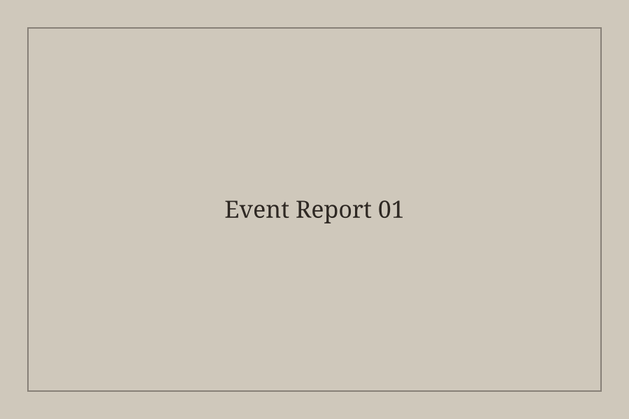
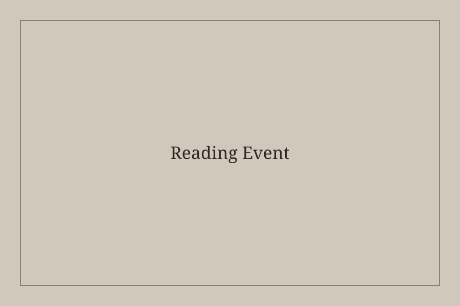
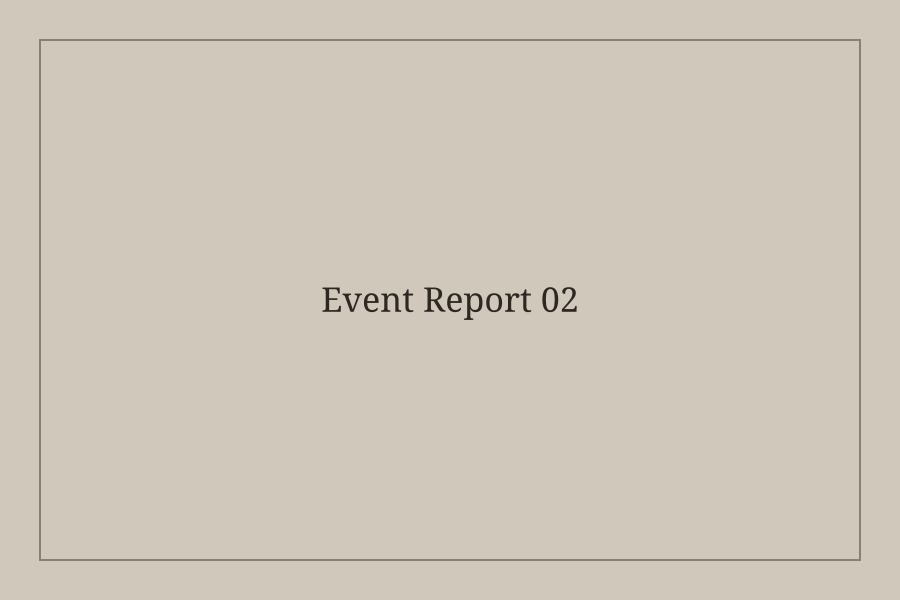
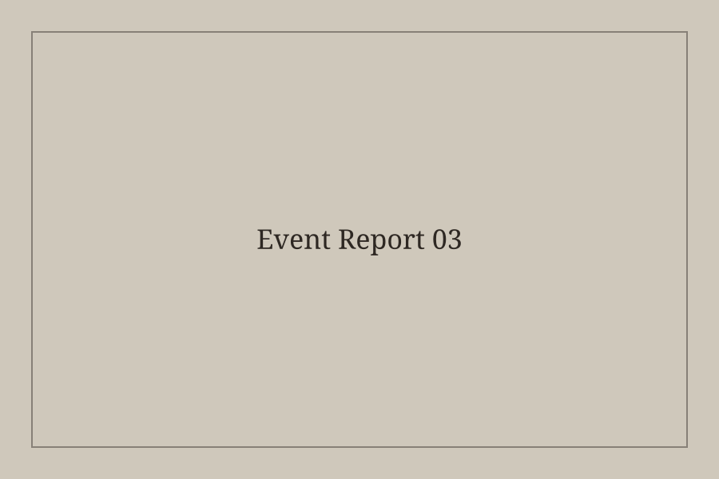

「旅する本棚」を読む会
本と記憶、場所について静かに語り合いました。
読書探訪イベント

Next Event
月に2回、オーナー自らが選書した書籍の背景や魅力を語る2時間のイベントです。 本の世界に合わせた深煎り珈琲と、特別なお茶菓子をセットでお楽しみいただけます。

本と記憶、場所について静かに語り合いました。

文章の余白と珈琲の苦味について話しました。

一冊の本を手がかりに、問いを持ち帰る時間となりました。